Honestidad con los datos
Se muestran los ·· momentos; ninguno se omite ni se destaca a mano. Con tan pocos registros no se usan porcentajes. El audio se declara referencial y los volúmenes, estimados. Los datos dudosos se muestran como dudosos.
El fundamento de la visualización: de dónde viene la idea, qué se registró en terreno, cómo se construyeron los datos y por qué se ven como se ven.
Para los romanos, cada lugar tenía un espíritu protector propio: el genius loci. En el siglo XX la arquitectura recuperó la idea —Christian Norberg-Schulz, en Genius Loci: hacia una fenomenología de la arquitectura (1979)— para hablar del carácter de un sitio: aquello que hace que un lugar sea ese lugar y no otro.
En Japón, la deidad que protege una localidad, ligada a un santuario y al bosque que lo rodea (鎮守の森, chinju no mori). No está en todas partes: pertenece a un lugar y lo cuida.
Dos tradiciones lejanas coinciden en algo: un lugar tiene un carácter que lo habita. Esta pieza toma esa idea y la busca en el sonido. Cada momento registrado en terreno se dibuja como un kami, una pequeña presencia hecha de lo que se oyó; el espíritu de cada lugar es el conjunto de sus kamis.
Cada lugar tiene un halo, un sentir, una experiencia hecha de lo que suena alli. En nuestros registros ese "espíritu" está cubierto por un velo de motores, voces y máquinas. Registramos ·· momentos. Esto es lo que habita detrás.
El Barrio Puerto de Valparaíso suena fuerte: micros, camiones, bocinas, grúas, voces que ofrecen paseos en lancha. Ese ruido no es solo molestia; se superpone como un velo que cambia según la hora y el espacio, y que decide si las personas se quedan o siguen de largo.
Esta visualización no es un mapa de contaminación acústica. Pregunta otra cosa: si se descorre ese velo capa por capa, ¿quién habita realmente cada lugar? ¿El mar, las personas, las máquinas del puerto? ¿Y ese lugar invita a quedarse o aleja?
Para responder no hay que resolver nada ni dar un diagnóstico: hay que mostrar lo que se escuchó, con honestidad, y dejar que cada quien lo recorra.
En 2026, el Grupo 2 del Taller de Diseño de Servicios (e[ad] PUCV) observó cuatro lugares del Barrio Puerto, numerados desde el borde costero hacia el interior. Cada registro es un momento de unos 10 minutos en un punto fijo.
Los niveles se midieron con aplicaciones de teléfono o reloj: ··. No son mediciones calibradas; sirven para comparar momentos entre sí, no como cifras oficiales.
Los lugares
Las fichas en PDF se pasaron a una base: ·· registros y ·· sonidos, uno por fila. Cada registro conserva el código de la wiki del grupo (BP-01 a BP-40). Algunas fichas traían otro código escrito adentro y se reconciliaron; los tres instrumentos de un mismo registro de Piera (BP-17 a BP-19) quedaron como uno solo.
Para dibujar, los tipos anotados se agrupan en cuatro especies:
| Especie | Tipos de la ficha | Ajustes |
|---|---|---|
| Personas | H humano · C comercio | la música de los locales |
| Tránsito | V vehículo | semáforos, pitidos de cruce y bocinas de autos |
| Máquinas | M máquina | bocinas de barco y remolcador |
| Naturaleza | N naturaleza | palomas anotadas como «otro» |
Cada ajuste quedó anotado en la base, para poder revisarlo.
Cada sonido se asoció a una de 28 familias (voces, micros, grúas, oleaje…). Cada familia tiene un audio referencial: grabaciones de Valparaíso de Félix Blume y otras de Freesound, ninguna grabada en estos momentos.
·· fichas tienen notas de revisión pendientes con el grupo, y se muestran en la ficha de cada kami:
Las 20 encuestas del grupo son otro instrumento y aún no se procesan. Los datos del artefacto del grupo quedan en espera.
Primera lectura · por especie
Plaza Echaurren tiene solo ·· registros: lo que se ve de ese lugar es un indicio, no una conclusión.
Cada posición, tamaño y movimiento nace de un dato. Estas son las reglas.
Se muestran los ·· momentos; ninguno se omite ni se destaca a mano. Con tan pocos registros no se usan porcentajes. El audio se declara referencial y los volúmenes, estimados. Los datos dudosos se muestran como dudosos.
Todo el marco es monocromo: papel y tinta. Solo los sonidos tienen color, uno por especie.
IBM Plex Mono · el instrumento: datos, ejes, etiquetas
Source Serif 4 · la voz humana de quien observó
Anton · números, lugares, título
El ruido como desenfoque y grano alrededor de cada kami; el sonido que se propaga como anillos y curvas de nivel; encima, una capa de cuaderno de campo con etiquetas monoespaciadas.
Cada kami es un momento. Horizontal: la hora (09:30–19:15). Vertical: el dB promedio (50–80). Su velo va del mínimo al máximo. Tiene un brazo por sonido: el largo es la intensidad, el trazo el patrón, la forma y el color la especie.
Las personas son racimos que respiran. El tránsito, una masa que estalla y se repliega. Las máquinas, trazos rígidos que vibran. La naturaleza, partículas que derivan. Un ciclo de 20 segundos equivale a los 10 minutos del registro: cada sonido se enciende cuando se oyó.
Los momentos que se evaluaron con poco agrado tienen bordes que tiemblan y cambios bruscos; los agradables, bordes suaves y fundidos lentos.
En cada ficha, el mezclador separa el momento en cuatro láminas translúcidas, una por especie. Al quitar una, el velo se aclara en proporción a la intensidad que se fue, y el sonido se oye más cerca.
Las grabaciones pasan por un velo sonoro: un filtro y una reverberación que las vuelven lejanas y difusas, más cuanto más fuerte era el lugar. Cada sonido pesa según su intensidad, con el volumen general según los dB del momento.
Quien recorre la pieza puede armar su propio kami y lo compara con los momentos registrados: pesa más cuántos sonidos hay de cada especie, después la intensidad y el nivel, y al final el ritmo. Muestra el más cercano, nunca uno «igual».
El campo legible (propuesta B) se entiende con mínima leyenda. La escena de velos (propuesta A) es más atmosférica: cada lugar es un campo de curvas, una cada 3 dB sobre 50, más apretadas cuanto más inestable es el lugar.
Ninguna se copia: de cada una se saca una decisión que se conecta con los datos.
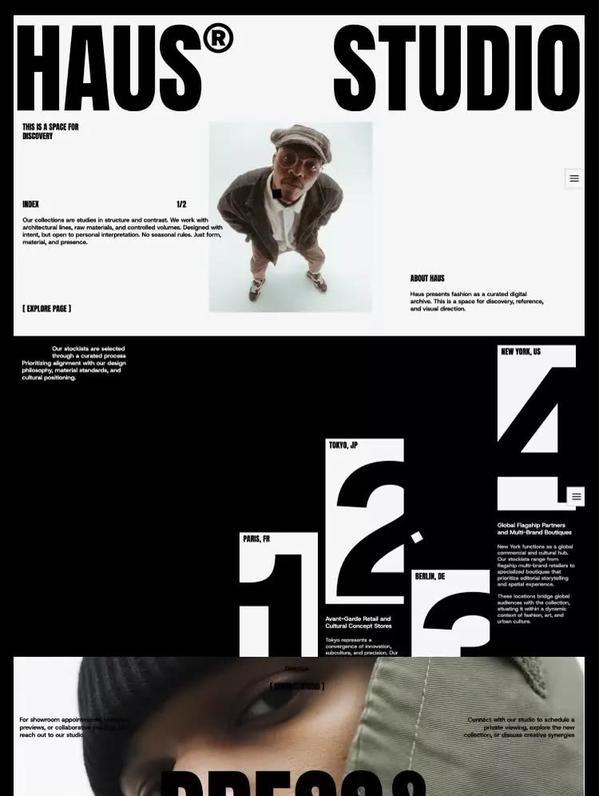
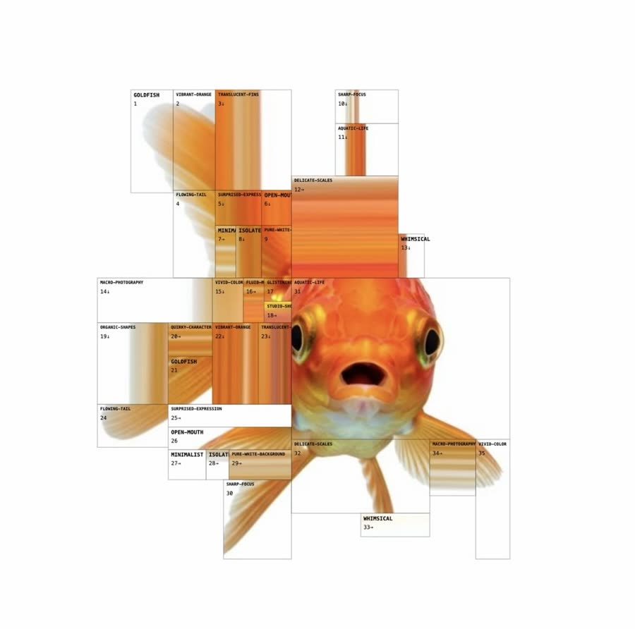
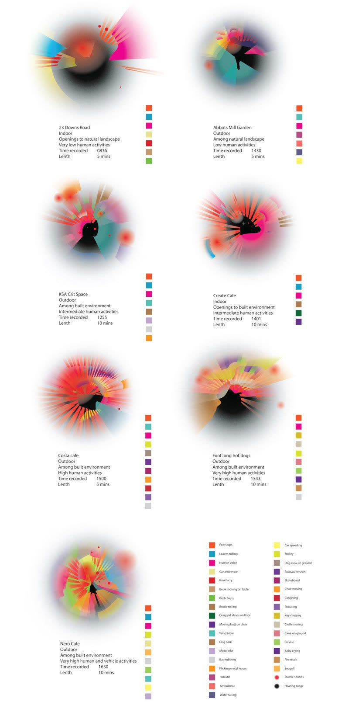
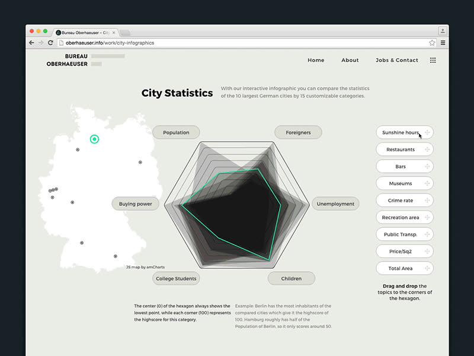
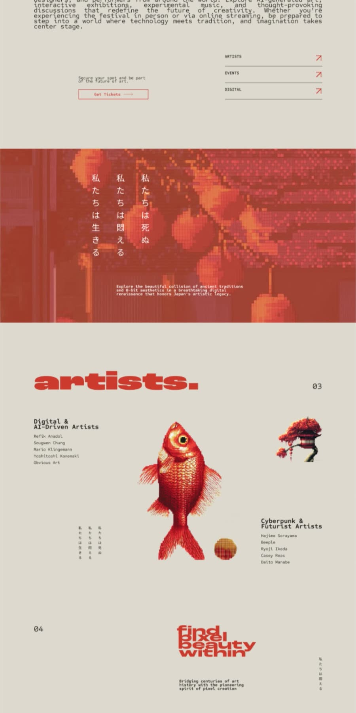
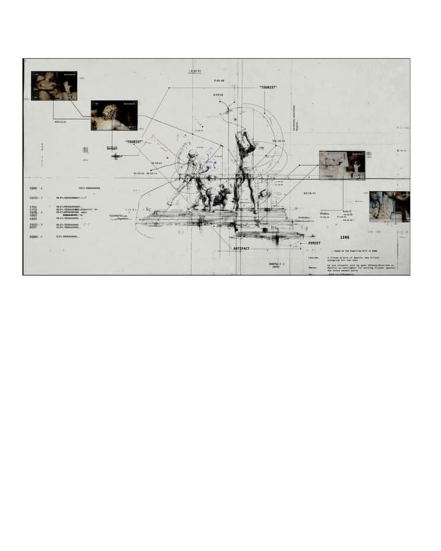
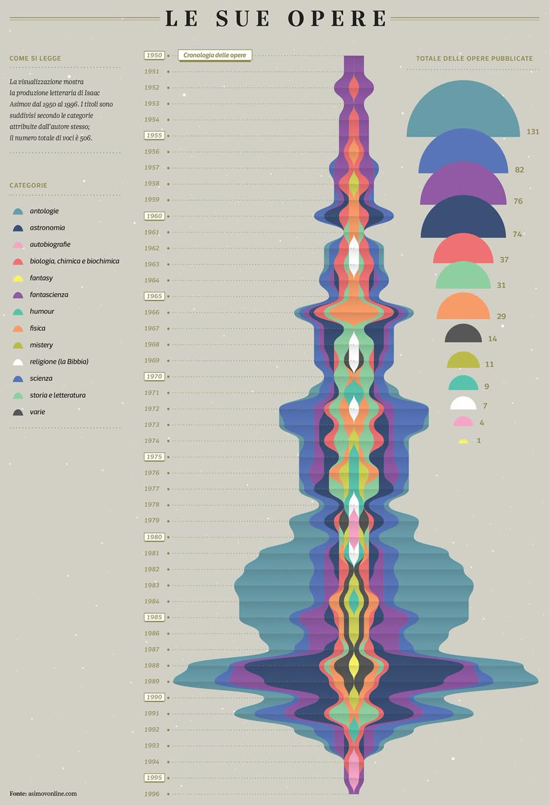
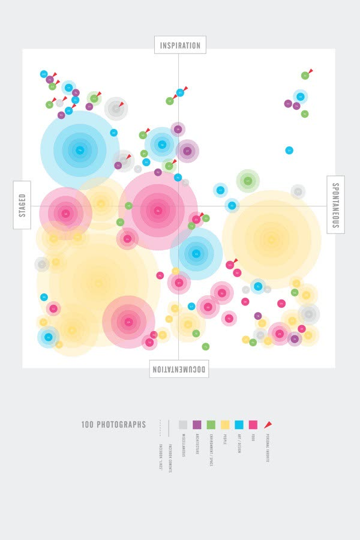
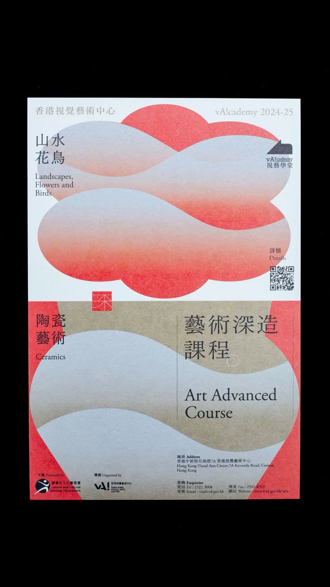
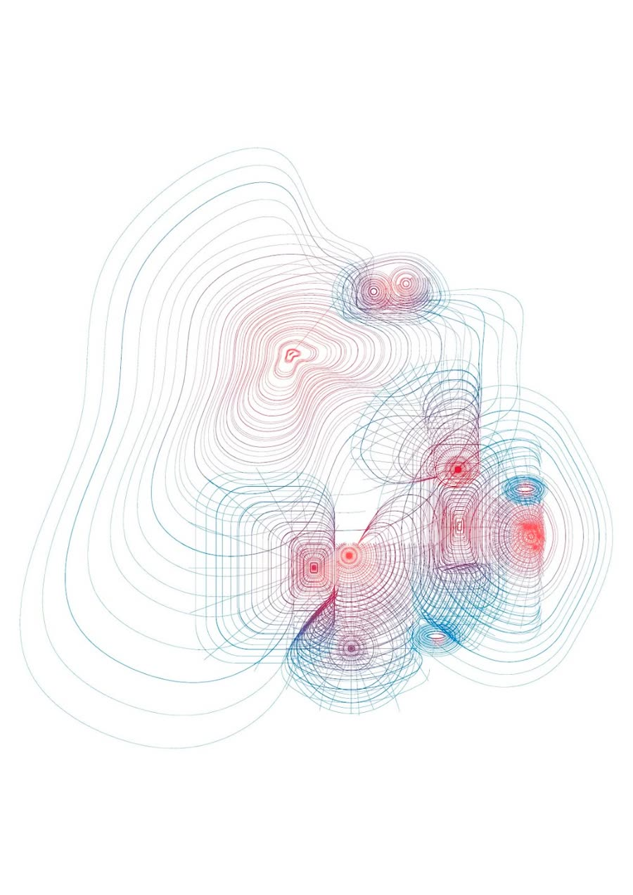
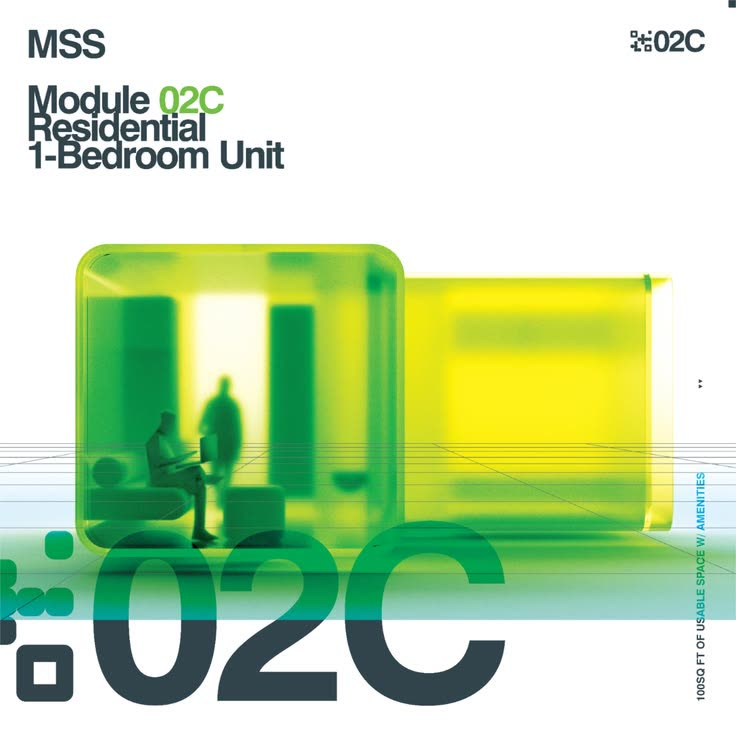
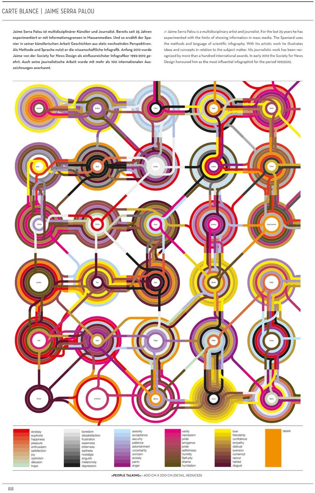
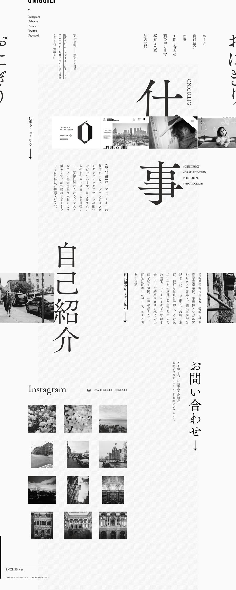
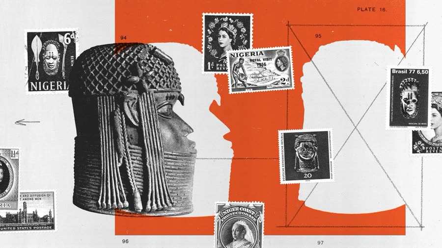
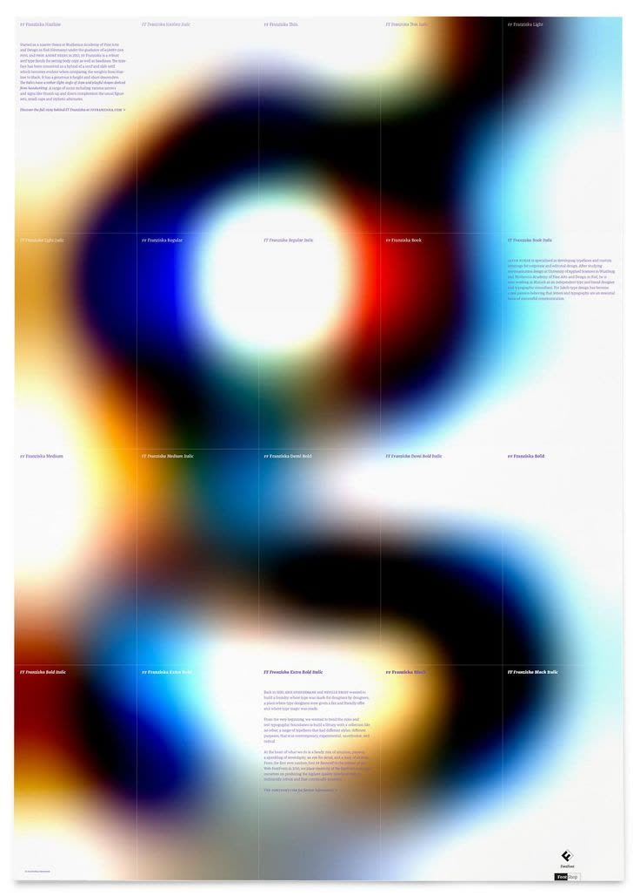

Sonidos (referenciales, procesados en la página)
«M-retroceso» se sintetiza en el código. CC0: dominio público · CC BY: atribución requerida.